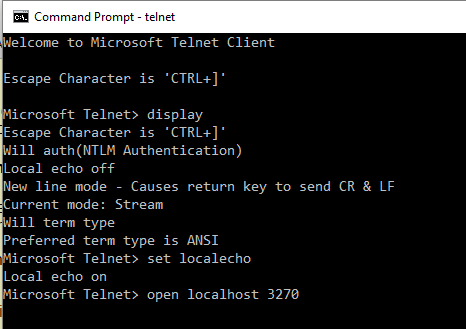
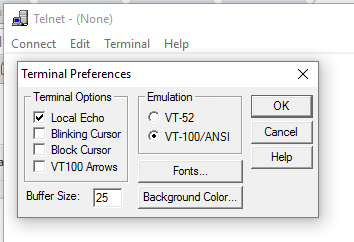

Hercules Version 4 has been used with the following tn3270 and telnet applications. Click on each name to view settings and other considerations for using that application with Hercules.
The above list is neither an endorsement of those products nor a recommendation to use them. If wish to share your experience with a different telnet and/or tn3270 application, please post that experience to the Hercules-390 Yahoo group. Other telnet client applications that comply with the following RFCs should work.
Remember that local echo needs to be set on for telnet connections.
| Telnet | tn3270 | |
|---|---|---|
The x3270 family of tn3270 applications are available without charge from x3270.bgp.nu. RPM's exist for many Linux distributions that use Redhat Package Manager files; check here for a list. It is also packaged for Debian and Ubuntu, and the .deb packages can often be used with other Debian-based Linux distributions. They are licensed under the BSD license as shown on the x3270 license page.
The packaged installation files available for Linux distributions are several minor releases older than the current stable release. You may wish to build x3270 from source even when an installation package exists for your Linux distribution. Build instructions for a variety of environments are in the Documentation - Miscelaneous page of the x3270 web site.
The x3270 family includes the following applications (there are additional applications in the family; visit the x3270 site):
Start an x3270 session and connect to Hercules with the following.
Windows: "c:\Program Files\wc3270\wc3270" -port nnnn -model 32xx-x hostname
Linux: x3270 -port nnnn -model 32xx-x hostname
Replace the port, model, and hostname options as follows.
| -port nnnn |
This must match the port named in the Hercules configuration file CNSLPORT statement. |
| -model 32xx-x |
Unless you know that the application program running under Hercules to which you will attach supports large screen sizes, specify 3279-2 or 3278-2 to select a 24 x 80 screen size. There's nothing wrong with a bit of trial and error here. Try other screen sizes to see what works. But start with a model 2. |
| hostname 001f@hostname console@hostname |
This identifies the ip address of the Hercules system and optionally the 3270 device in the Hercules configuration to which this session should connect. You can specify a host name, IPv4 address, or IPv6 address. Most commonly, you'll use localhost for the host name. If a hexadecimal number is provided before the host name, the session will try to connect to that address in the Hercules configuration. If a groupname is provided, the session will try to connect to any available 3270 device that names that group. If no name or number is provided before the host name, the session will connect to any available 3270 device. |
Example x3270 session startup command
Windows: "c:\Program Files\wc3270\wc3270" -port 3270 -model 3229-2 localhost
Linux: x3270 -port 3270 -model 3229-2 localhost
Tn3270 for the Macintosh is available without charge from Brown University at https://www.brown.edu/cis/tn3270/. According to the web site as of May, 2016, the current version of this tn3270 application can be used with OS X 10.3.9 "Panther" through OS X 10.9 "Mavericks" on POWER PC and Intel-based systems.
Older versions of tn3270 exist for older Macintosh systems.
This author does not have access to a Mac and regrets being unable to provide configuration options.
Vista tn3270 is a Windows application written and maintained by Tom Brennan, and is used by members of the Hercules community. You can learn more about it at Tom Brennan Software. The screenshots are worth a look.
Complete installation and setup instructions are included in the Hercules Installation Guide for Hercules Version 4 starting on page 123.
ZOC Terminal, available for Windows and Macintosh, is offered by Emtec Innovative Software and is used by members of the Hercules community. You can learn more about it at the ZOC Terminal web site. The screenshots are worth a look.
This author does not have access to a Mac and regrets being unable to provide configuration options.
PuTTY version 0.67 has been tested on Windows and version 0.63 has been tested on Debian 8.4. Other recent versions of PuTTY should work as well.
PuTTY source and Windows builds are available without charge and can be obtained from putty.org. RPM's exist for many Linux distributions that use Redhat Package Manager files; check here for a list. It is also packaged for Debian and Ubuntu, and the .deb packages can often be used on other linux distributions based on Debian. It is distributed under the MIT license, as shown on PuTTY's license page.
The following options must be set for correct operation. Click on the page name to open a screen shot in a new browser window:
Page Setting Value needed for Hercules Session Port Must match nnnn in the CNSLPORT statement in the Hercules configuration file Connection type Select "Telnet" Terminal Local echo Select "Force on" Local line editing Select "Force on" Connection - Data Terminal-type string Must be set to "ANSI"
Other options may be set as you wish. Because mainframes that used printer-keyboards used continuous forms, and "scrolling back" through the console log meant thumbing through a stack of continuous forms paper, you may wish to set the size of the window and the lines of scroll back on the Windows page to accomodate your preferences.
The Telnet client included with Windows 10 is known to have been used successfully with Hercules Version 4. The clients included with Windows XP, Vista, 7, 8, and 8.1 appear to be the same program as that included with Windows 10, so the you should be able to set up a connection using the information below. Please post any diffiuclties to the Hercules-390 Yahoo group, noting the symptoms, Windows version and error messages.
One settings change is needed to use the Windows Telnet client application with Hercules Version 4: set localecho. The defaults for the remaining settings will work. See the session sample below for an example.
Window size and scroll-back are controlled by the command prompt window that Telnet is running in. You can use the set logfile and set logging commands to record the Telnet session to a file.
Unlike PuTTY, it is difficult to set up a connection profile to pre-define the localecho setting, the window size, and scroll-back. For this reason, PuTTY is probably a better choice.

There are many reasons not to use Windows NT Telnet to connect to Hercules. Specifically:
If, after all that, you decide to crank up your NT workstation to Telnet to Hercules on a more modern system, here's how you do it:

Host Name: You can use "@ccuu" following the host name to connect to a specific printer-keyboard address in the Hercules configuration file. Example:
localhost@001fPort: must match the value of the CNSLPORT statement in the Hercules configuration file. Although a drop-down box is shown, you can just type in a port number
TermType: must be ANSI.
 Local echo must be checked under Terminal Options.
VT100/ANSI must be selected for Emulation.
Last updated 04 May 2016